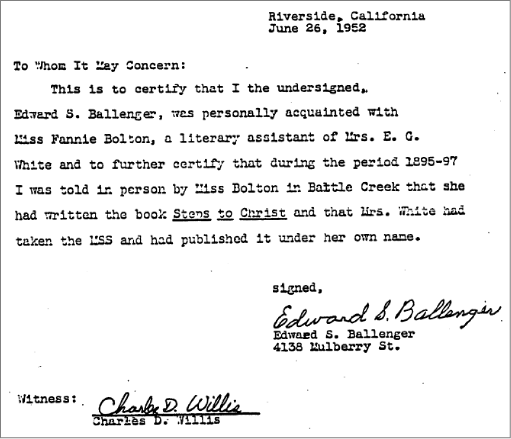

Who wrote Steps to Christ?
There is no doubt that Steps To Christcontains many Ellen G. White (EGW) quotes that were made before Fannie Bolton went to work for EGW. I believe Fannie Bolton's claim that she made up the book Steps to Christ from the evidence that I have researched. Fannie used quotes from EGW's files which would include her plagiarized material from uninspired authors. Fannie organized the book into chapter titles, and being college educated put the book into proper grammar and punctuation. Fannie tells Ballenger that Mrs. White took the manuscript and published it under her name in the letter below.
I am sure that Fannie Bolton wondered why, after putting in hours of research, and making up the chapter names and putting the book together for publication, that she didn't get credit.
I wrote a letter to the White Estate, January 8, 1997, to Mr. Tim Poirier, Associate Director/Archivist, asking: "Why did Fanny Bolton claim to have written, Steps to Christ? Would you send me a copy of a page from Steps to Christhand written by Ellen G. White?"
Mr. Poirier responded in a letter dated January 20, 1997, saying, "Fannie Bolton's claim regarding Steps to Christ—Fannie Bolton never made that claim, so far as I have ever seen. It was made by others after her death. Nor did Ellen White write the book by hand—so I cannot send you a handwritten page. It was compiled by her editorial assistants from her earlier writings. I've sent an example for your comparison, showing the source for the paragraphs on page 83. (Fannie first met Ellen White in 1887.)"
These editorial assistants would have to include Fannie Bolton.
It has now been conceded that Ellen had much more help than the church members had been led to believe and that her helpers did indeed have great latitude in selecting and arranging material and in final editing. Furthermore, in addition to the editorial assistants who are fairly well known—Marian Davis, Clarence C. Crisler, Dores E. Robinson, Mary Steward, Fannie Bolton, Mary H. Crisler, Sarah Peck, Maggie Hare, and H. Camden Lacey—a later release by Willie White calls attention to others less well known about: "From 1860 and onward, some of her manuscripts for publication, and some of her testimonies, were copied by members of her family."* Then he named such copyists as Lucinda Abbey Hall, Adelia Patten Van Horn, Anna Driscoll Loughborough, Addie Howe Cogshall, Annie Hale Royce, Emma Sturgis Prescott, Mary Clough Watson, and Mrs. J. L. Ings. There may well have been others. The White Lie! By Walter T. Rea, A Matter of Ethics, Chapter 11, p. 199.
*W.C. White, quoted by Robert Olson and Ronald Graybill. Tapes of seminar at Southern Missionary College in the fall of 1980.
Facts concerning Steps to Christ
- Fannie went to work for Mrs. White in 1888. Steps to Christwas published in 1892.
- The comparison sent to me by Mr. Poirier is from Steps to Christp. 83.
"The humblest and poorest of the disciples of Jesus can be a blessing to others. They may notknow they are doing any special good, but by their unconscious influence they may start waves of blessings that will widen and deepen, and theblessed results they may never know until the day of finalreward."
This is to be compared with, Testimonies Volume 3, p. 246 published in 1872.
"The humblest and poorest of the disciples of Jesus can be a blessing to others. They may notrealize they are doing any special good, but by their unconscious influence they may start waves of blessings that will widen and deepen, and thehappy resultsof their words and consistent deportment they may never know until the day of finaldistribution of rewards." - Because of the similarity of the wording of an earlier statement in 1872 found in Testimonies when compared to Steps to Christ1892, Mr. Poirier would lead us to believe Fannie could not have written Steps to Christ.
- Mr. Poirier, states, "Nor did Ellen White write the book by hand—so I cannot send you a handwritten page. It was compiled by her editorial assistants from her earlier writings."
- We also know Steps to Christwas not written by hand by Ellen G. White but by her editorial assistants. These editorial assistants would have to include Fannie Bolton.
- Fannie did claim to have written Steps to Christ to Edward S. Ballenger and Ballenger's letter is witnessed by Charles D. Willis:

From the evidence I have uncovered, it is easy to understand why Fannie claimed to have authored "Steps to Christ."
There are no "steps to Christ"!
The idea of taking steps to Christ is not a Biblical teaching. For 2000 years Scripture has told us that salvation is all about grace and faith. Nothing is about taking "steps to Christ". You cannot save yourself by works therefore you cannot be lost by works. Before you can be baptized and become a member of the Adventist Church you generally have to go through two to three weeks of indoctrination and then take vows to accept the non biblical doctrines of the church. See "Baptized into Ellen G. White.
Eph 2:8-9 (NIV) For it is by grace you have been saved, through faith—-and this not from yourselves, it is the gift of God—-not by works, so that no one can boast.
All you have to do is to believe in Christ/faith and you will be saved.
Acts 16:30-31, 33 (NIV) He then brought them out and asked, “Sirs, what must I do to be saved?” They replied, “Believe in the Lord Jesus, and you will be saved—-you and your household.” At that hour of the night the jailer took them and washed their wounds; then immediately he and all his family were baptized.
Philip baptized a eunuch after a brief teaching about Jesus. No weeks of indoctrination and taking vows and no "steps to Christ"!
Acts 8:34-39 (NIV) The eunuch asked Philip, “Tell me, please, who is the prophet talking about, himself or someone else?” Then Philip began with that very passage of Scripture and told him the good news about Jesus. As they traveled along the road, they came to some water and the eunuch said, “Look, here is water. Why shouldn’t I be baptized?” And he gave orders to stop the chariot. Then both Philip and the eunuch went down into the water and Philip baptized him. When they came up out of the water, the Spirit of the Lord suddenly took Philip away, and the eunuch did not see him again, but went on his way rejoicing.
Examples of plagiarism from The White Lie
Steps to Christ
E. G. White, 1892
Night Scenes in the Bible
Daniel March, 1868-1870
[96] If we take counsel with our doubts and fears, or try to solve everything that we cannot see clearly, before we have faith, perplexities will only increase and deepen…But if we come to God…and in humble, trusting faith make known our wants to Him…who governs everything with his will and His word, He can and will attend our cry, and will let light shine into our hearts. Through sincere prayer we are brought into connection with the mind of the Infinite. We may have no remarkable evidence at the time that the face of our Redeemer is bending over us in compassion and love, but this is even so. We may not feel His visible touch, but His hand is upon us in love and pitying tenderness.
[336] While we take counsel with our doubts and fears, or try to solve the problem of the universe in the cabinets and laboratories of science, or to explore the depths of eternity with the feeble taper of human reason, we shall only increase our perplexity and deepen our disappointment…
[339] But let them go up to the mount of God…in humble, trusting prayer…that the supreme power governing the universe,,, and look only to him who sees everything at one view and governs everything with a word…Let them believe that…he will hear their voice and attend to their wants. And then the darkness and perplexity will vanish from their minds…
In every act of sincere prayer the soul comes into living contact with the infinite Mind. We see no face vending over us with looks of compassion. No voice answers to our humble cry. No hand is let down for us to grasp…as the child seeks the parents supporting hand.
God's Will Known and Done
Almon Underwood, 1860
[96] Another element of prevailing prayer is faith. "He that cometh to God must believe that He is, and that He is a rewarder of them that diligently gently seek Him." Hebrews 11:6....
But to claim that prayer will always be answered in the very way and for the particular thing that we desire is presumption.
[291] Another requisite of prevailing prayer is faith. He that cometh unto God, must believe that he is, and that he is a rewarder of those who diligently seek him." Heb. 11:6…You are not to expect it to come in a particular way, nor necessarily at just such a time.
See Fannies confessions, also Kellogg's letter to Ballenger.
Sections
Robert K. Sanders, Founder and Editor of Truth or Fables, 1997–2012
Life Assurance Ministries assumed ownership of Truth or Fables in 2012
© 2016 Life Assurance Ministries. All rights reserved.